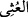
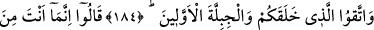
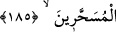
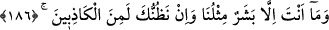
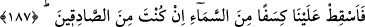

Yâni sayıyı ve ölçüyü eksik yapmak, iyi para yerine sahtesini vermek, gasp, hırsızlık,
sahibinin izni olmadan tasarrufta bulunmak ve bunlar gibi hangi hak olursa olsun
insanların haklarından hiç bir şeyi eksiltmeyin.
Öldürmek, yağmalamak ve yol kesmek suretiyle “yeryüzünde bozgunculuk yaparak
karışıklık çıkarmayın.” Fesad çıkardığınız halde haddi aşmayın.
“__WORD__ hissen idrak edilmeyen şeylerde fesâdın daha ilerisidir.
Fesada/bozgunculukta çoğunlukla karışıklık çıkarmakda söz konusu olduğu halde
onunla takyid edilmesi, bazı karışıklık çıkarmaların fesad olmaması sebebiyledir.
Meselâ, azgın zâlime fiili ile mukabelede bulunmak gibi. Hızır (a.s.)’ın çocuğu
öldürmesi ve gemiyi delmesi gibi iyilik tarafı ağır basan durumlar da böyledir.
184-185. Sizi ve önceki nesilleri yaratan (Allah) dan korkun. Onlar şöyle dediler:
Sen, olsa olsa iyice büyülenmiş birisin!
“Sizi ve önceki nesilleri yaratan” Allah’tan “korkun.”
“Onlar şöyle dediler: Sen, olsa olsa iyice büyülenmiş” tekrar tekrar kendisine sihir
yapılmış “birisin!” Bu o dereceye ulaşmış ki aklından bir iz kalmamış.
186. Sen de, ancak bizim gibi bir beşersin. Bil ki, biz seni ancak yalancılardan biri
sayıyoruz.
“Sen de, ancak bizim gibi bir beşersin.” Beşerî sıfatlar açısından sen de ancak bizim
gibisin. O halde ne ile bize üstünlük taslıyorsun? Peygamberlik davasını nereden
getirdin?
İki âyet arasına “vav (ve)” getirilmesi, yalanlamada mübâlağada bulunarak
büyülenmek ile beşer olmanın her ikisinin de peygamberliğe ters olduğunu göstermek
içindir. Semûd kıssasında ise aynı iki âyet arasında “vav (ve)” getirilmemesi, orada
sadece bir mânânın, yani iyice büyülenmiş olmanın kasdedilmesi sebebiyledir.
“Bil ki,” yâni durum şu ki “biz seni” peygamberlik iddiâsında “ancak yalancılardan
biri sayıyoruz.”